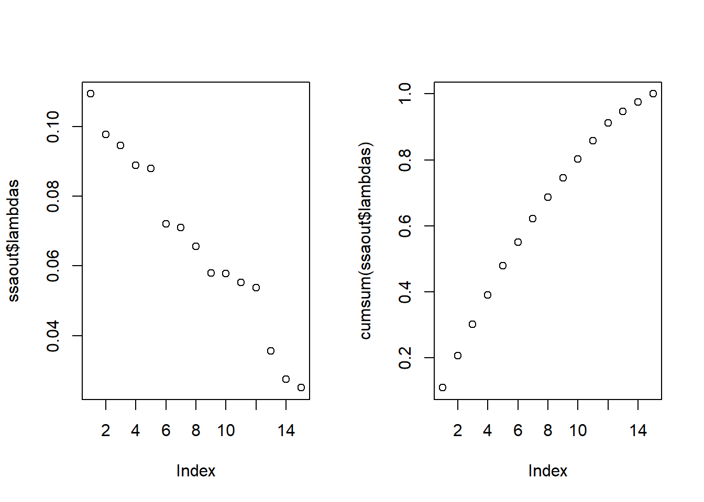

Exercise 8 Singular Spectrum Analysis – Diagnostics & Forecasting
For the spring season flow (Apr-Jun average) at Lees Ferry on the Colorado River perform SSA and make predictions from it. The steps are as follows:
** Diagnostic **
- Select a window size of about 10-20 years (feel free to experiment with the window size); create the Toeplitz matrix and perform SSA.
- Plot the Eigen spectrum and identify the dominant modes.
- Reconstruct the dominant modes (i.e. Reconstructed Components - RCs) and plot them. Infer from them the dominant periodicities.
- Sum the leading modes and plot them along with the original time series. This will show the ‘filtering’ capability of SSA. Feel free to play with the number of RCs.
- Plot the dominant modes and show their corresponding wavelet spectra
** Prediction **
- Apply the SSA to data for the pre-2001
- Make a prediction for the 2001 using AR models to the leading modes; and repeat for each year through 2016.
- Plot the observed and predicted values; compute the median correlation.
8.1 SSA on time frame window
set.seed(1) # allow repetition of results
# libraries
libr=c("magrittr","MASS","sm.density")
options(warn=-999)
suppressPackageStartupMessages(lapply(libr,
require, character.only = TRUE))# Load flow data
mflow = read.table(
"http://civil.colorado.edu/~balajir/CVEN6833/HWs/HW-3-2018/LeesFerry-monflows-1906-2016.txt")
lf = mflow[,2:13] %>% `rownames<-`(mflow[,1]) %>% # Apr - Jun
{rowMeans(.[,4:6])} %>% {.*0.0004690502*0.001} # convert to 10^3 cms
# lfann = apply(mflow[,2:13],1,sum) %>% {.*0.0004690502*0.001}M = 20
ssaout = ssab(lf,M)
par(mfrow=c(1,2))
plot(ssaout$lambdas)
plot(cumsum(ssaout$lambdas))sum(ssaout$lambdas[1:5])## [1] 0.4127211We choose the first 5 RPC as they represent more than 40% of the variance.
K=5
par(mfrow=c(3,2))
for(i in 1:K){
plot(ssaout$Rpc[,i],type = "l",main = paste(sprintf("RPC %s",i)))
}The resulting time series from the reconstructed dominant modes is plotted with the historical data.
Recon = apply(ssaout$Rpc[,1:K],1,sum)
plot(mflow[,1],lf,col="red",type="l",xlab = "", ylab = "",ylim = c(0,max(lf)))
lines(mflow[,1],Recon,col="blue")
legend(x="bottomleft",legend = c("Historic values",
"Reconstructed dominant modes"),col=c("red","blue"),lty = 1,bty="n")The sum of all RPC gives the original time series.
Recon.tot = apply(ssaout$Rpc[,1:20],1,sum)
plot(mflow[,1],lf,col="red",type="l",xlab = "", ylab = "",ylim = c(0,max(lf)))
points(mflow[,1],Recon.tot,col="blue")
legend(x="bottomleft",legend = c("Historic values",
"Reconstructed dominant modes"),col=c("red","blue"),lty = 1,bty="n")8.2 Prediction: Use AR models to fit RPC and predict 2001 - 2016 streamflows
8.2.1 Perform SSA until 2001
M = 15 # window reduced
ssaout = ssab(lf[1:95],M) # 1906 - 2000
par(mfrow=c(1,2))
plot(ssaout$lambdas)
plot(cumsum(ssaout$lambdas))
sum(ssaout$lambdas[1:5])## [1] 0.4784262We choose the first 5 RPC as they represent more than 40% of the variance.
K=5
par(mfrow=c(3,2))
for(i in 1:K){
plot(ssaout$Rpc[,i],type = "l",main = paste(sprintf("RPC %s",i)))
}The resulting time series from the reconstructed dominant modes is plotted with the historical data.
Recon = apply(ssaout$Rpc[,1:K],1,sum)
plot(mflow[1:95,1],lf[1:95],col="red",type="l",xlab = "", ylab = "",ylim = c(0,max(lf)))
lines(mflow[1:95,1],Recon,col="blue")
legend(x="bottomleft",legend = c("Historic values",
"Reconstructed dominant modes"),col=c("red","blue"),lty = 1,bty="n")8.2.2 AR model for dominant modes
# Fit best AR to each dominant RPC
rc.ar = as.list(1:K)
for(i in 1:K) rc.ar[[i]] = ar(ssaout$Rpc[,i])
# Fit a Normal to RPC 6 to 15
resid = apply(ssaout$Rpc[,(K+1):M],1,sum)
noise = fitdistr(resid,densfun = "normal")$estimate
hist(resid, probability = TRUE)
sm.density(rnorm(1000,noise[1],noise[2]),add = TRUE)# Simulate 2001 to 2016
nsim = 250
pred.ahead = se.ahead = array(NA, c(K, 16, nsim))
sim = matrix(NA,nrow = nsim,ncol = 16)
for(isim in 1:nsim){
for(i in 1:K){
xp = predict(rc.ar[[i]],n.ahead = 16)
pred.ahead[i,,isim] = xp$pred
se.ahead[i,,isim] = xp$se
}
# Add all RPC and add noise (normally distributed)
sim[isim,] = colSums(pred.ahead[,,isim]) + rnorm(16,noise[1],noise[2])
}
# plot(sim,type = "l",ylim = c(0,max(sim,lf[96:111])))
# lines(lf[96:111],col = "red")
# legend(x="topleft",legend = c("Historic values",
# "Simulated values"),col=c("red","black"),lty = 1,bty="n")The forecast is presented as boxplots. The correlation is calculated using the median values.
# Median correlation
boxplot(sim,names = seq(1:16)+2000)
title("Forecasted vs. real streamflows")
lines(lf[96:111],col="red")
points(lf[96:111],col="red")sim.median = apply(t(sim),1,median) # Get median value of each step
cor(sim.median, lf[96:111]) # Correlation## [1] 0.2562116ssab = function(yy,M) {
#### SSA
N = length(yy)
m1 = M-1
Np = N-M+1
Np1 = Np+1
## create the lagged matrix
topl = matrix(0,Np,M)
for(i in 1:M){
i1=i-1+1
i2 = Np+i-1
topl[,i]=yy[i1:i2]
}
#zz=scale(topl)
zs=var(topl)
zsvd = svd(zs)
#Eigen Values.. - fraction variance
lambdas=(zsvd$d/sum(zsvd$d))
### PCs
At = topl %*% zsvd$u
#### Reconstructed Components RCs
Rpc = matrix(0,N,M)
for(ipc in 1:M){
## t = 1,M-1 mt = 1/t; lt = 1, ut =t
lt=1
m1 = M-1
for(i in 1:m1){
i1 = i-lt+1
i2 = i-i+1
Rpc[i,ipc] = sum(At[i1:i2,ipc]*zsvd$u[lt:i,ipc])/i
}
### t = M, N', mt = 1/M, lt = 1, ut = M
lt=1
ut=M
for(i in M:Np){
i1 = i-lt+1
i2 = i-M+1
Rpc[i,ipc] = sum(At[i1:i2,ipc]*zsvd$u[lt:ut,ipc])/M
}
### t = N'+1, N, mt = 1/(N-t+1), lt = t-N+M, ut = M
lt=1
ut=M
for(i in Np1:N){
lt = i-N+M
i1 = i-lt+1
i2 = i-M+1
mt = (N-i+1)
Rpc[i,ipc] = sum(At[i1:i2,ipc]*zsvd$u[lt:ut,ipc])/mt
}
}
out=c()
out$lambdas = lambdas
out$eof = zsvd$u
out$At = At
out$Rpc = Rpc
as.list(out)
}